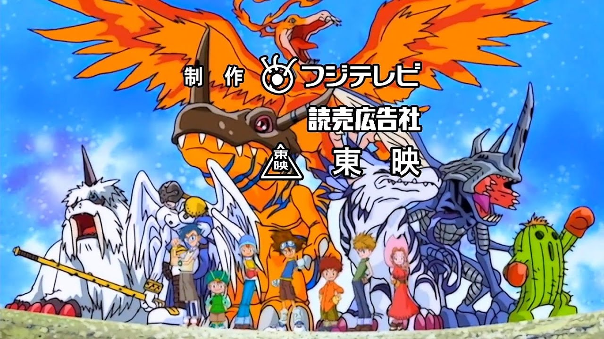
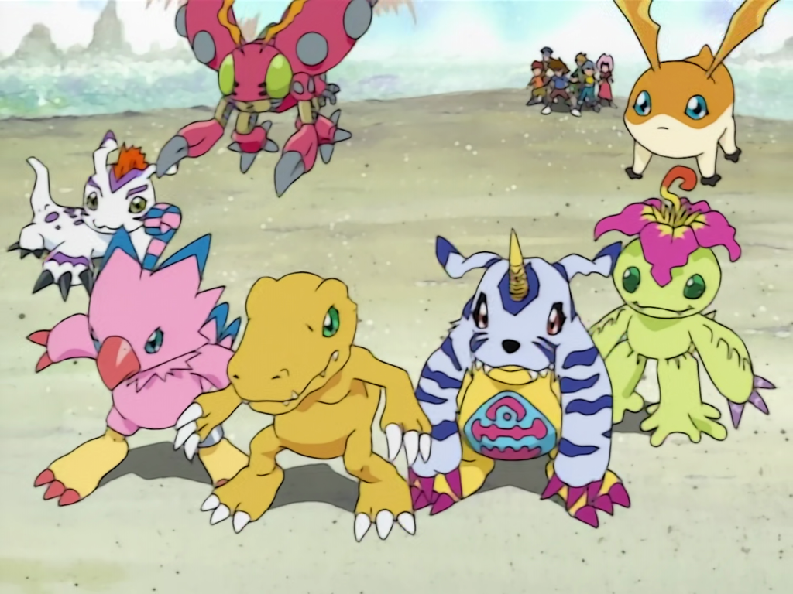

DIGIMON ADVENTURE
Es una serie de anime producida por TOEI ANIMATION. Es la primer serie de la franquicia Digimon, creada por Akiyoshi Hongo en 1999.
SINOPSIS
La historia se centra en siete niños de Japón, que son transportados al Mundo digital después de encontrar unos Digivice y ser arrastrados por una "gran ola", llegando así a la Isla File. Allí encuentran a sus compañeros Digimon, y con su ayuda, aprenderán a sobrevivir pese a las adversidades de estar en un mundo desconocido.
PERSONAJES

Tai Kamiya

Matt Ishida

Izzy Izumi

Sora Takenouchi

Mimi Tachikawa

Joe Kido

T.K. Takaishi

Matt Ishida
